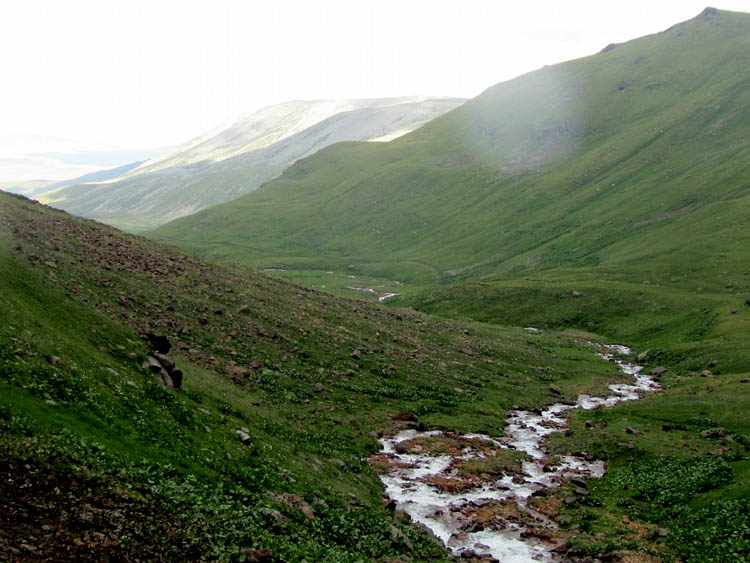

A Shofar over Armenia. Zara Hovhannisyan
In the kingdoms of Ararat the shofar must sound...
Author: Zara Hovhannisyan. Translated from Russian.
Zara Hovhannisyan lives in Armenia, in Yerevan. In 1991 Yeshua became her Saviour, and since then she has served Him. He called her to serve in a worship team. Here is Zara's testimony of how she took up the shofar.
In the summer of last year a tragic event happened in our church. Eduard Petrosyan, the head of our outreach mission, was killed. He was there with a mission of humanitarian aid for Armenians. He was the only brother in the church who knew how to blow the shofar. I still remember how he blew the shofar at various prayer meetings. We would climb one of the many mountains our Armenia is rich in. We climbed the mountains and held prayer meetings there, and at the end of the prayer he would begin to blow the shofar.
Eduard travelled through Syria and the Middle East, and in every country he visited he climbed the highest place, above particular cities, in order to blow the shofar. And we felt the power that the sound of the shofar carries.
I very much wanted this sound to go on sounding in the church, so that it would not stop. Our guidance was the prophetic word from the prophet Jeremiah 51:27: "Set ye up a standard in the land, blow the shofar (KJV: the trumpet) among the nations, prepare the nations against her, call together against her the kingdoms of Ararat, Minni, and Ashchenaz; appoint a captain against her; cause the horses to come up as the rough caterpillers."
This passage of Scripture tells of the battle against Babylon. And it says here that in the kingdoms of Ararat the shofar must sound.
After our missionary was killed, I felt a very strong desire to take the shofar into my hands and blow it, to acquire one in order to blow it, so that the sound of the shofar would always sound in Armenia, in the kingdom of Ararat.

And the Lord gave me a gift: a Yemenite (kudu) shofar was sent to me as a present from Jerusalem. I learned from YouTube videos how to blow it, how to shape the lips and breathe out, and other technical details. Gradually I began to succeed.
But then some doubts arose: may a woman blow the shofar? After all, the Bible does not speak of it directly. But I felt inside that what I was doing was right. I learned a great deal from the Torah-Art site, where I watched the film "The Voice of Shofar" and read articles about it. They inspired me really and with full strength, in spite of being a woman, to blow the shofar, to proclaim the glory of the Lord and through the blowing to carry out its prophetic action.
In the closing part of this video you can hear how I blow the shofar.
 The Mystery of the Apostle Paul. Israel and the Church
The Mystery of the Apostle Paul. Israel and the Church The Ten Commandments (Anochi). Prayerful Chant
The Ten Commandments (Anochi). Prayerful Chant